13. Realizar un seguimiento del sitio con Google Analytics y Google Search Console
Si alojas tu sitio web en GitHub, probablemente te interese saber el número de visitantes del sitio. Para ello, necesitas una etiqueta de Google Analytics (GA). Le preguntamos a ChatGPT cómo crear una etiqueta GA:
 |
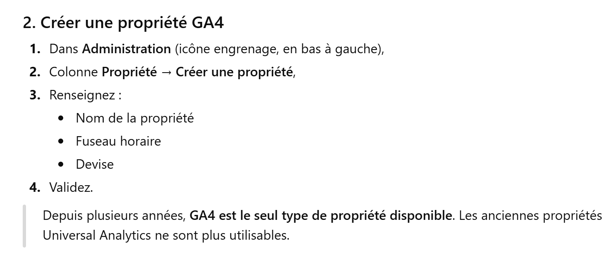 |
 |
- En [1], introduce la URL de tu sitio web en GitHub;
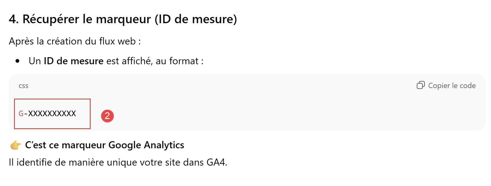 |
- En [2], anota el código de seguimiento de tu sitio;
Introduce este código de seguimiento en el archivo de configuración [config.py]:
En la línea 4, escribe tu código de seguimiento. MkDocs lo insertará automáticamente en todas tus páginas HTML cuando genere el sitio web. Por lo tanto, no es necesario que sigas las demás instrucciones de ChatGPT que muestran cómo instalar el código de seguimiento de GA en tus páginas HTML.
Vamos a pedirle a ChatGPT instrucciones precisas para comprobar que el marcador funciona:
 |
 |
El paso anterior no es lo suficientemente claro. Aquí tienes algunas capturas de pantalla para ayudarte:
 |
- En [1], selecciona la cuenta que deseas seguir (en caso de que tengas varias);
- En [2], selecciona el botón de administración;
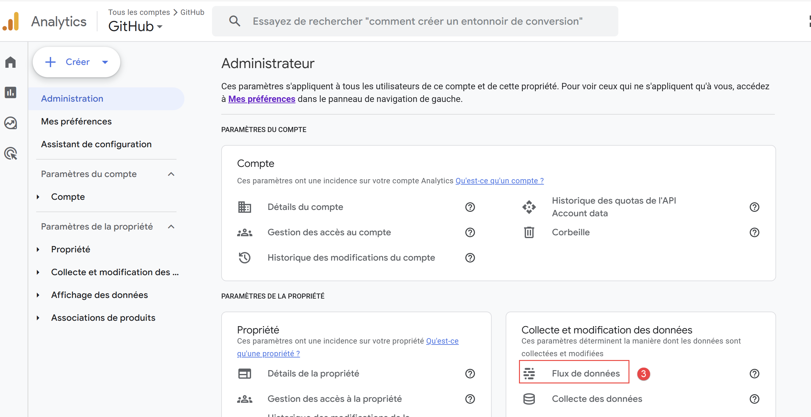 |
- En [3], selecciona [Flujo de datos];
 |
- En [4], haz clic en el flujo de datos;
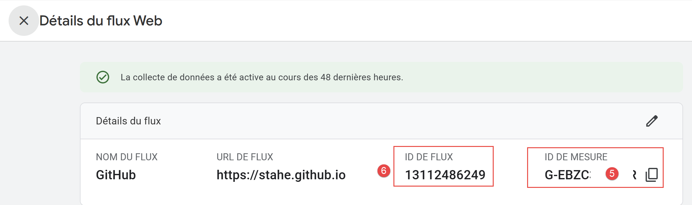 |
- En [5], encontrarás el marcador GA4 que has creado;
- En [6], el ID del flujo. Es un concepto diferente del ID de medición;
Volvamos a la página de inicio de GA:
 |
- En [1], solicite la visualización en tiempo real de las visitas;
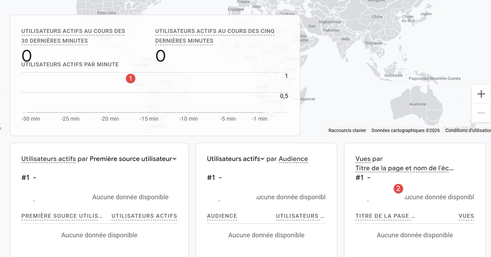 |
- En [1], verá a sus visitantes;
- En [2], la página que se ha visitado. Le pedí al conversor Gemini que asociara el nombre del sitio web, en lugar del nombre de la página, al marcador GA4. El archivo [analytics.html] es el que se encarga de este cambio de nombre asociado a GA4:
 |
Ahora podemos continuar con las explicaciones de ChatGPT:
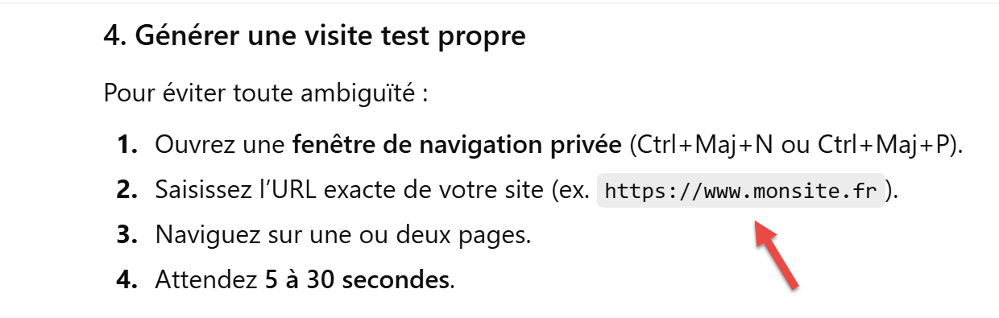  |
He hecho lo que se pide en [4] sin pasar por una ventana privada. Y he obtenido esto:
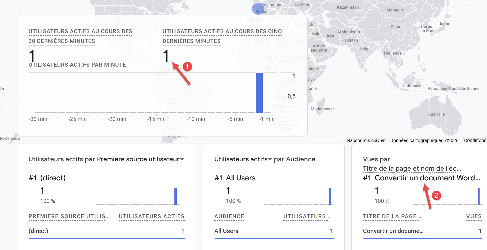 |
El marcador GA4 de Google Analytics funciona correctamente.
Ahora vamos a presentar otra herramienta de seguimiento de tu sitio web [Google Search Console]. Preguntemos a ChatGPT para qué sirve esta herramienta:
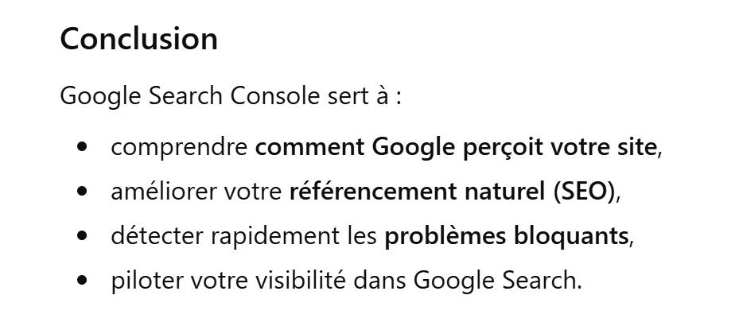 |
Casi nunca utilizo esta herramienta. Solo lo hago para animar al motor de búsqueda de Google a explorarla e indexarla, de modo que los usuarios puedan encontrarla.
La URL de la herramienta [https://search.google.com/search-console]:
 |  |
- En [1], la lista de sitios web que se han declarado a Google;
- En [3], la lista de tus sitios web;
- En [4], añade tu nuevo sitio web;
 |
- En [5], escribe la URL de tu sitio web. Se encuentra en el archivo [config.py]:
- en [6], pasa al siguiente paso;
Normalmente, en este paso, Google Search Console le ofrece un archivo [googlexxxxx.html] que debe descargar. A mí no me apareció esta pantalla porque ya tenía ese archivo en el sitio web implementado. Es uno de los dos archivos declarados en [config.py]
Coloca el archivo [googlexxxxx.html] en la raíz de tu carpeta de trabajo e introduce su nombre en la línea 2 anterior del archivo [config.py]. El script [convert] se encarga de colocar los dos archivos anteriores en la raíz del sitio MkDocs que genera. El script [build] los colocará en la raíz del sitio HTML generado.
Cuando hayas copiado el archivo [googlexxxxx.html] en la raíz de tu carpeta de trabajo, comprueba el contenido del archivo [robots.txt]:
 |
El contenido del archivo [robots.txt] es el siguiente:
En la línea 3, comprueba que la URL sea la de tu sitio web, la misma que figura en el archivo [config.py].
Vuelva a publicar su sitio web en GitHub escribiendo los tres comandos siguientes en su terminal de Python:
Una vez hecho esto, vuelve a [Google Search Console] y selecciona la propiedad que has creado anteriormente.
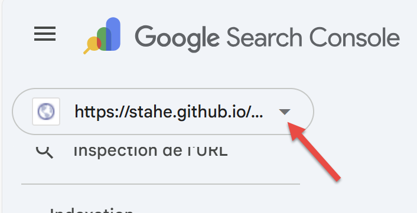 |
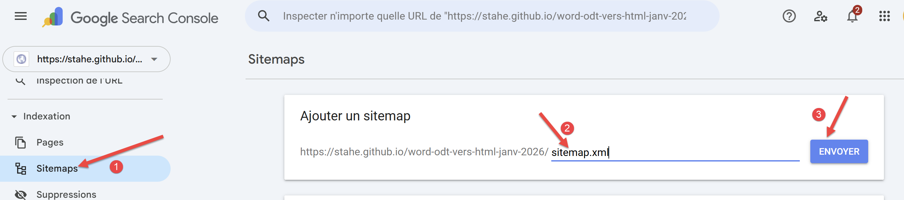 |
- En [1], selecciona la opción [Sitemaps];
- En [2], escribe [sitemap.xml];
- En [3], valida la URL;
El archivo [sitemap.xml] es un archivo que Mkdocs ha colocado en la raíz del sitio HTML exportado a GitHub. Puedes comprobar que está ahí escribiendo directamente su URL:
 |
El archivo [sitemap.xml] enumera todas las páginas HTML del sitio.
Si todo va bien, aparecerá la siguiente pantalla:
 |
Eso es todo. Deberás indexar las páginas del sitio tú mismo:
 |
- En [2], escribe la URL de una de las páginas de tu sitio;
Aquí, el resultado es el siguiente:
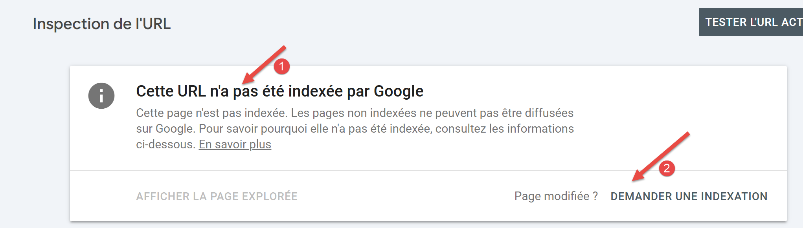 |
- En [1], Google indica que la página aún no está indexada;
- En [2], puedes solicitar su indexación;
Google Search Console comprueba entonces si la página solicitada puede indexarse. Si es así, aparece el siguiente mensaje:
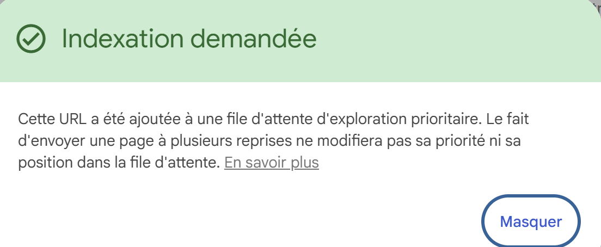 |
Puede hacer esto con todas las páginas de su sitio web para asegurarse de que está correctamente indexado por el motor de búsqueda de Google.